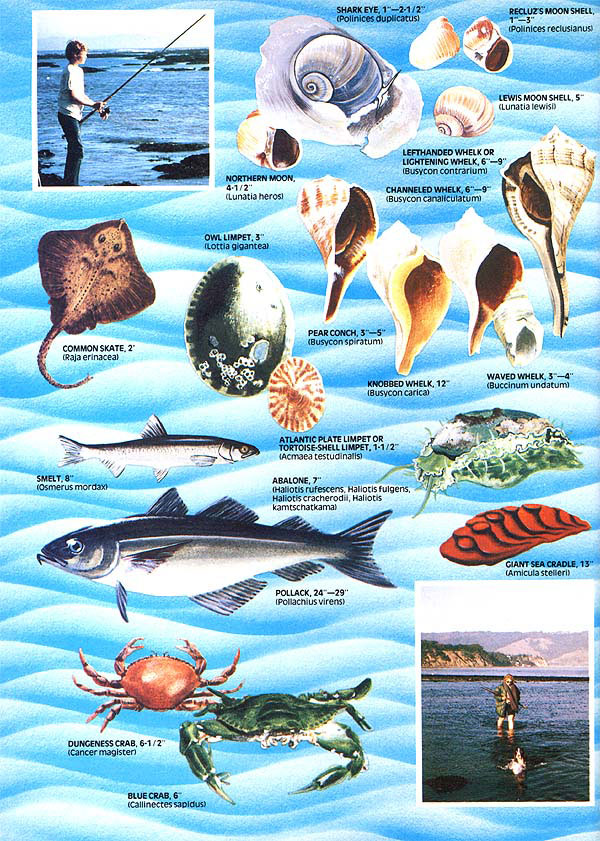

Here are more ways to forage free eats from North America's 150,000 miles of tidal shoreline.
How 'bout it? Have you sampled the "harvest it yourself" seafood (clams, mussels, goose barnacles) that I described In the first section of this two part article? If so, you already know that the North American shoreline both east and west-offers a lot of good eatin' to anyone willing to go after it.
But that's just the beginning. C'mon! Call the local health department (to check the purity of the water along your favorite beach) ... ask the Fish and Game folks about licenses, limits, and so on ... and pull on your hip boots. 'Cause now we're goin' fishin'!
When it comes to pullin' In a passel of fish for the fry-pan, the lowly cane pole and accessories-14 feet of bamboo, some string, a bobber, a sinker, and a few small hooks-are all you really need. Of course, if you already own something more exotic (heavy surf casting rods of "state of the art" spinning reels or whatever), that's OK too. But your basic cane-pole-and -string rig can handle the job quite nicely.
The two most consistently productive types of shoreline saltwater fishing that I've tried are tidal pool and wharf anglin'. And, since many (but by no means all) of the fish you're likely to tie into in such areas are relatively small, the fastest way to fill your stringer or "catch bucket" is by tyin' a tiny hookin the 116, 08, or even #10 size range-to the end of your cane pole's line.
Sure, other anglers may look askance at your minuscule grapplers. Let 'em. You'll have the last laugh when you bait up with rock snails, mollusks, and little sea worms (all free and foraged from near your fishing site) . . . and then proceed to haul In as many of the "big 'uns" as the folks using larger hooks, plus a healthy assortment of the small, tender, tasty fish that they can't catch at all.
Smelt (Osmerus mordax), for Instance, only average about six inches in length. But you can catch 'em by the bucketful when you find a school . . . and it's hard to name any fish, regardless of size, that has a more delicate and delicious flavor when fried in browned butter.
These feisty little fellows are abundant in most U.S. coastal waters, look like miniature barracudas, and have an appetite which matches their vicious a appearance (they'll grab most anything you drop in front of 'em). Some states do limit the number of smelt that can be taken In a day, though, so-before you drop that first line In the water: phone your local game warden and get the straight skinny on size and bag limits. (For that matter, check out the ground rules for every species of seafood you intend to collect.)
Another fish that can keep your bobber dancin' if you live along the eastern seaboard between North Carolina and Labrador is the pollack (Pollachlus Arens). This member of the cod family often grows over two feet long and Isn't at all shy about latchin' onto a foraged bait. Local fisherfolk frequently look down on this plentiful fish because of its many tiny bones. I've found, though, that a fillet taken from the cod's meaty back-above the bony rib cage-is both sticker-free and wonderfully tasty.
Tie half a dozen of these fillets in a piece of cheesecloth, lay the package in the bottom of a sizable kettle, and add two quarts of water, one tablespoon of salt, and the juice of one lemon. Bring the water to a quick boll, simmer for five minutes, then remove and unwrap the pollack and serve the fillets hot with a dill or anise sauce. This fIsh--which doesn't taste "fishy"-Is also excellent fried, baked, or broiled ... especially when seasoned first for an hour in a marinade made of one large finely diced or ground onion, two tablespoons of salt, two tablespoons of vinegar, and one teaspoon of mace. Rinse the fillets In cold water after their soak and then fry, bake, or broil them.
There are, of course, literally hundreds of other species of saltwater fish that you can harvest alongshore with a pole and line. Most are both edible and delicious when cooked slowly until their meat just flakes .. . despite the fact that some are a little offbeat. (Don't, for Instance, overlook sharks, which have a taste and texture much like cod and are frequently sold in the market as "grayfish". Or rays: When you cut the wings of a common skate (Raja erlnacea) off close to the body, slice them into strips parallel to their "airfoil", peel off the skin, pop out the cartilage In the middle, cube the remaining meat, dip It In beaten eggs and bread or cornmeal crumbs, and deep fry It ... you'll think you're eating scallops!)
The heads (if you're too proud to consume 'em . . . lots of people aren't) of the fish you catch have their use too: as crab bait (few of the little crustaceans can resist a fresh fish head, chicken neck, or chunk of salt pork). Tie your offering to a line, add a sinker, and toss the rig-crude as It may appear to be-into the muddy water along shorelines, estuaries, and tidal streams where crabs are known to lurk. Then, when you think you have a "bite", just pull the line in-very, very slowly and easily-and slip a dip net under the crabs that ride the "free lunch" all the way to the surface.
That's the way Individuals, couples, and whole families go after the luscious blue crab (Callinectes sapidus) up and down the East Coast . . . and they sometimes come home with baskets full of the tasty crustaceans.
The same approach-I've found works just as well out here on the west Coast With the Dungeness crab (Cancer magister) and his Pacific seaboard relatives . . . even though most folks in this neck of the Woods seem to prefer to catch their crabs in store-bought ring nets and crab traps. And if you're truly adventurous (and know enough to approach these clawed crustaceans from the rear with a great deal of caution) you can even take the little brutes by hand: I've caught western Dungeness crabs this way In shallow water and I regularly forage rock crabs by hand from pools and shallow bays.
All true crabs are edible (unless they live !n polluted water . . . which is why you should always, ALWAYS check out the purity of your foraging grounds). And, as long as you obey the pertinent game laws, you can "bile up" and enjoy any of the critters that are big enough to take a nutpick to. Just drop the crustaceans alive into boiling water (it's the quickest and most humane way to kill them), leave them until their shells are bright red, and then pick out and eat their meat hot or cold with melted butter. Or, if you want to impress your friends, add a light white sauce and a white wine to the bill of fare.
SOME SELECTED MOLLUSKS
It Is unfortunate that the delicious abalone (Haliotis rufescens, Haliotis fulgens, Haliotis cracherodil, and Hal loos kamtschatkama) has become known as the "king of seafoods". For thanks to that publicity and the resulting demand for the mouthwatering steaks cut from these univalves (one shelled animals)-legalsized "ab" is now about as scarce as hens' teeth throughout much of its range up and down the Pacific coast.
And that's all the reason you need to forget abalone entirely . . . and concentrate your efforts on a number of the ab's far less renowned (but equally delectable) relatives.
The West Coast Intertidal zone from northern California to southern Mexico, for example, is the home of the often ignored owl limpet (Lottia gigantea). These huge gastropods-the shells, which look like squat tipis, are often more than three inches acrossare abundant in many areas and can be gathered at low tide simply by poppin' 'em off their rocky perches with a sharpened putty or other flexible knife.
As with all univalves, only the owl limpet's fleshy foot-which yields a steak about two inches across-is eaten. Tenderize the cut of meat by pounding it and storing it in the refrigerator overnight before it's cooked. Then dip each of the steaks (you'll need several for every eager eater!) in an egg and bread-crumb or cornmeal batter and fry 'em to a golden brown for a flavor that will wake up even the most jaded taste buds.
Other West Coast limpets-and even Acmaea testudinalis, an Eastern variety-are generally considered to be too small to bother with. As the late Euell Gibbons pointed out in his writings about foraged foods, however, that idea is nonsense. It might not be big enough to eat as steaks, but the meat of almost any limpet is worth going after for chowder and soups.
To prepare one of those chowders, put a quart or more of limpets into a covered kettle with one cup of water and steam the shellfish for ten minutes. Remove the limpets (save the broth) and, as soon as the gastropods are cool enough to handle, remove their meat and discard the shells and viscera. The meat is then ground in a food chopper with a medium blade, returned to the broth, and placed over a low heat.
Next dice one large onion and four slices of bacon and fry 'em together until the onion is translucent. Add two cups of diced potatoes, cover everything with water, and boil the mixture until the spuds are soft. Then stir in the limpet meat and broth and immediately add one quart of milk and one-quarter teaspoon of finely ground black pepper. Allow the mixture to simmer while you blend one tablespoon of flour into one-fourth cup of milk and then slowly stir the solution into the chowder. Continue stirrin' the soup as it simmers (without boiling) for approximately ten minutes. Serve the steaming ambrosia with crackers on the side.
Yet another family of related mollusksthe chitons, or sea cradles-can also put good eatin' on the table . .. even though they tend to grow so small (only up to two inches long) on this continent's East Coast that few people ever give them that chance.
An, but it's a different story all the way from Alaska down to Baja California here on the western shores of North America, where the giant sea cradle (Amicula stellerh reaches a length of thirteen inches.
Look for the brick-red giant sea cradles at low tide along rugged beaches.
The vegetarian animals often hide under overhanging ledges and are sometimes difficult to see . .. but it's not unusual to stumble onto dozens of them clustered together along the lowwater mark of rough northern California beaches in the spring.
Chiton meat does have a tendency to develop a strong fishy smell within two hours of the time it's caught. When you clean 'em Immediately, however, pack their steaks in ice, and then cook their meat as quickly as possible . . . sea cradles are so delicious that you'll want to get right up from the table and begin picking your way through slippery coastal rocks in search of more.
And while you're out there-especially if you want to collect your seafood without any competitionkeep an eye peeled for various members of the whelk family (whelks are marine gastropods which look so "snaily" that few folks ever give a thought to eating them).
The best pickin's for whelk are found on the East Coast from Newfoundland to Florida and westward around the Gulf of Mexico to the tip of Texas. Look for the three- to four-inch-long waved whelk (Bucclnum undatum) along the upper East Coast south to the Carolinas, the 12-inch-long knobbed whelk (Busycon carlcal and six-inch-orlonger channeled whelk (Busycon canaliculatum) just off sandy shores from southern New England to Florida, the six- to nineinch lefthanded whelksometimes called the lightning whelk(Busycon contrarlum) south from Cape Hatteras, and the three- to fiveinch-long pear conch (Busycon splratum) from Hatteras around the tip of Florida and westward to Texas.
If you're a scuba diver, you can probably find all the whelks you'll ever want any time you want 'em by checking the bottom of the water 12 to 18 feet down off any sandy beach that contains a few washed-up whelk shells. Or just walk along the shore after any heavy storm and pick up the gastropods (inspect each one to make sure it's fresh and alive) that wash onto land by the bushel. Or-since these mollusks are carnivorous (eat meat)-you can make a deal with the commercial fishermen who frequently find whelks stealing bait from their crab and lobster traps (most such fishermen are overjoyed to find someone who'll take the little blighters off their hands).
Whelks are frequently broken open with a hammer and the fleshy foot (the edible part) cut out, pounded or rolled, seasoned, and fried to a light brown. The foot can also be ground into "hamburger", or diced and pickled.
The gastropods are pickled by boiling a pailful of the whelks in heavily salted water until they can be slipped from their shells with a pin or nutpick. Discard the viscera above each mollusk's foot and pull or slice off the operculum (horny plate that closes the shell). Then place one packet of commercially available crab-boil spice and three bayberry leaves in the bottom of a quart jar and loosely pack the container with alternating layers of cleaned whelks and finely sliced onions. Finally, fill the jar with boiling vinegar, seal, and allow the meat to soak for at least a few days. Delicious!
Once you've discovered how good (even if, sometimes, a little rubbery) whelks can be, you'll probably be encouraged to go after moon shells (sort of mini-whelks) too. Look for the Lewis moon shell (Lunatia lewlsl)--a grayishbrown five-incher-on sandy bottoms from British Columbia to Mexico . . . the one- to three-inch-long Recluz's moon shell (Polinices recluslanus) from California to Mexico ... the northern moon (Lunatla heros) from Newfoundland to the Carolinas . . . and the shark eye (Polinlces duplicatus) from Cape Cod to Texas.
All the moon shells are good to eat, they're generally found in the same kind of places that you'll find whelks (look, especially, for their rounded burrows in the sand as you walk along a beach at low tide), and their feet are both savory and tender when prepared properly. Just slice them into half-inch-thick steaks, pound, separate with wax paper, store in the refrigerator for 24 hours, dip in egg, roll in bread crumbs, and fry to a light brown.
And that's only the beginning, of course. Oysters, scallops, seaweed, sea eggs, beach plums, bayberry leaves, grunions, blennies, lancelets . . . the list of forageable saltwater seafood goes on and on. For that matter, I've only scratched the surface when it comes to identifying, collecting, preparing, and eating the few delectables mentioned in this two-part article.
But what are you waiting for? Even this scanty piece on the subject should have whetted your appetite for the "free for the gatherin' " goodies that almost anyone can forage up and down both of this continent's coasts. Now it's up to you to satisfy that hunger. Grab a copy of Euell Gibbons' excellent book, Stalking the Blue-Eyed Scallop (see note at the end of this article), make absolutely positive identifications of anything you harvest...end start stalkin.
EDITOR'S NOTE: For more Information about foraging seafood, see MOTHER N0. 14, pages 74-83 ... MOTHER N0. 48, pages 88-90 ..
MOTHER N0. 52, pages 108-110 ... and, of course, the first section of this two-part article In MOTHER NO. 53, pages 29-30. Most of the recipes printed here are from Stalking the BlueEyed Scallop by Euell Gibbons (available In paperback from any good bookstore for $3.95 or from Mother's Bookshelf, P.O. Box 70, Hendersonville, North Carolina 28739 for $3.95 plus 959 postage and handling) and are reprinted with the permission of David McKay Company, Inc.
|
 |
|
|